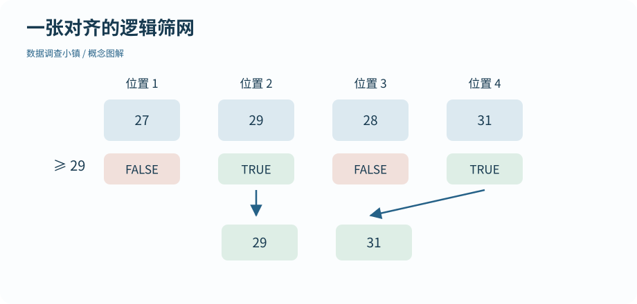

第 06 节 · 对象仓库
用条件找到想看的记录
怎样只留下比较热的几次测量？
区分位置索引和逻辑筛选，组合逐元素条件。
本节目录
运行位置：打开练习包内的 r-lab.Rproj，在项目根目录运行本节脚本。安装与准备见第 02—04 节；第 13 节说明扩展包。
先指出位置，再提出条件
temperature[c(1, 4)] 取出第一项和第四项。R 的常规正整数索引从 1 开始；负数索引用于排除位置，比如 temperature[-1] 去掉第一项。不要把正位置与负位置混在同一个索引中。
如果想找温度至少为 29 的记录，先计算 temperature >= 29。结果是一排 TRUE/FALSE，长度与原向量一致；放进方括号，TRUE 对应的元素就留下。
图解 · 一张对齐的逻辑筛网

先判断每一项是否至少为 29，再保留 TRUE 对应的原值。筛选保留原始顺序，不自动排序。
放大查看 ↗ 保存 SVG ↓# 数据调查小镇 · 第 06 节
# 在 r-lab 项目根目录运行；输出只写入 results。
temperature <- c(27, 29, 28, 31)
print(temperature[c(1, 4)])
keep <- temperature >= 29
print(keep)
print(temperature[keep])
print(temperature[temperature >= 28 & temperature < 31])
print(c("P01", "P04") %in% c("P01", "P02", "P03"))[1] 27 31 [1] FALSE TRUE FALSE TRUE [1] 29 31 [1] 29 28 [1] TRUE FALSE
把筛网和原记录对齐
逻辑向量像一张与记录逐项对齐的筛网。先单独打印 keep，再运行 temperature[keep]，能够看出到底哪些位置被选中了。不要只背最终的一行，否则一旦筛错就不知道从哪里检查。
== 判断相等，!= 判断不相等，>= 包含边界，> 不包含。赋值符号 <- 则改变对象绑定。例如“筛选小于负二”要写 x[x < -2]；把空格拿掉写成 x[x<-2]，可能被解析为赋值，含义完全改变。
两个条件一起用
temperature >= 28 & temperature < 31 让两个条件逐项同时成立；| 表示逐项满足任意一边；! 取反。用于筛选一整列时使用 & 和 |。后面的条件判断中还会遇到只关心单个逻辑结果的情况，不能把两类符号随意替换。
%in% 检查每个元素是否属于给定集合。它不要求双方长度相同，也不是像 == 一样逐位置比对，因此适合筛选若干地点编号。
筛选不是修改
读取 temperature[keep] 得到子集，本身不更改原对象。只有写出赋值，才保存或替换内容。下一节加入缺失值后，条件可能不再只有 TRUE 和 FALSE；这正是我们先把筛选过程拆开的原因。
动手试试
把边界讲清楚
对 c(27, 29, 28, 31) 选出大于等于 28 且小于 31 的值，预测保留顺序。
给我一点提示
条件作用于原位置，筛选不会自动排序。
查看参考解法与解释
x <- c(27, 29, 28, 31); x[x >= 28 & x < 31] 返回 29、28。28 被保留，31 被排除，顺序沿用原向量。
带走这一点
位置和逻辑条件是两种选择方式，逻辑条件必须与被筛选的数据对齐。调查表中可能有未记录的温度；下一节看看未知值怎样影响比较、筛选和计算。
检查一下理解
同时检查一列数的两个条件，使用哪个符号？
查看解释
& 逐元素组合逻辑条件；<- 赋值；+ 做加法。